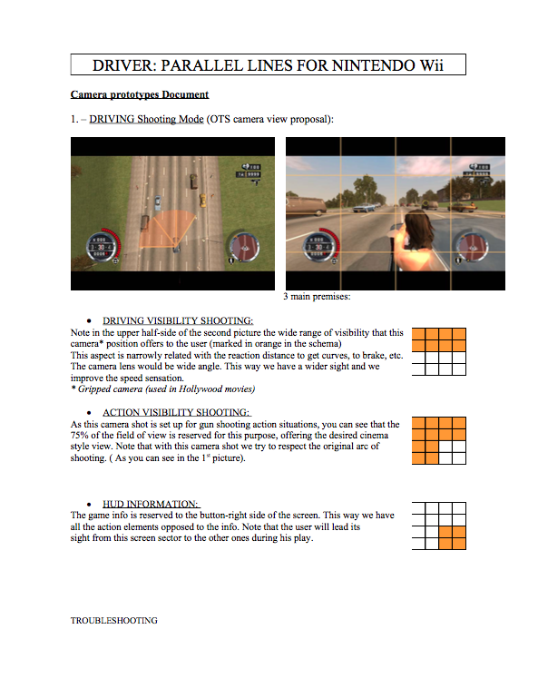
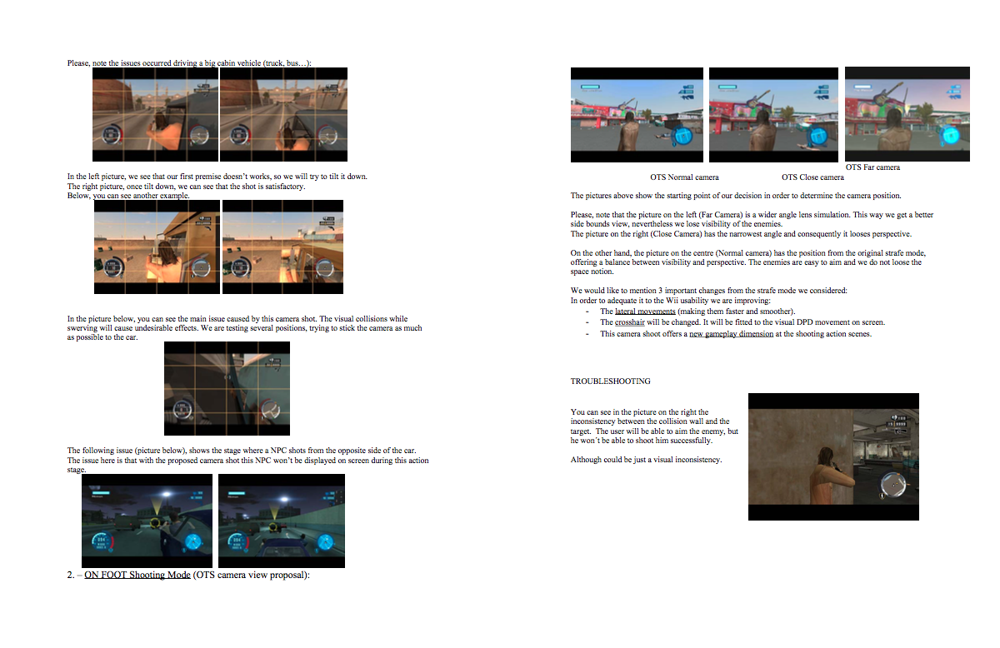
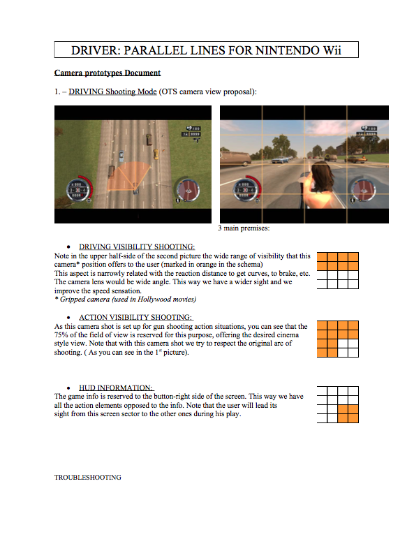
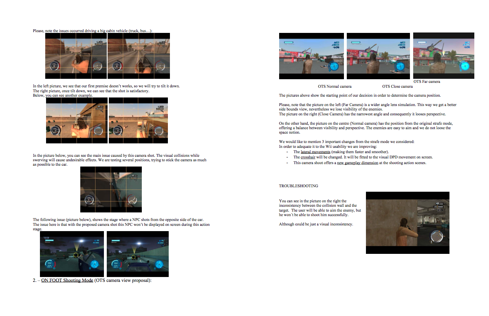

your light is

After my last project designing a successful VR user interface for Inflight Entertainment, I had
the time to
enrol in a bootcamp to improve my coding skills and web development background. I am currently learning
full-stack web development | MERN stack: Mongo DB, Express.js, Node.js Javascript, HTML and CSS.
I am a +10 years experience professional in a variety of markets and international dev teams. I like to work
in the fields of interaction design, mixed reality, game design and digital products.
My passion is to tackle gaps between technologies and usability. Problem solving and kickstarting new products
is my motivation. I believe in mixed reality served thru web technology in the very near future via React,
Unity or diverse new Javascript frameworks.
I am looking for multidisciplinary roles within new technologies development. Mixed reality, internet of
things, blockchain, mobility 4.0 where conception, design, prototyping and analysis flow dynamically.
I consider myself a committed, self driven individual. A passionate learner comfortable within teams that
foster ownership.
I am good at: kickstarting products, wireframing and giving format to products, problem solving on tech-user
operativity
Project Management, Mixed Reality, Prototyping, Javascript, Unity, UX/UI Design


 


